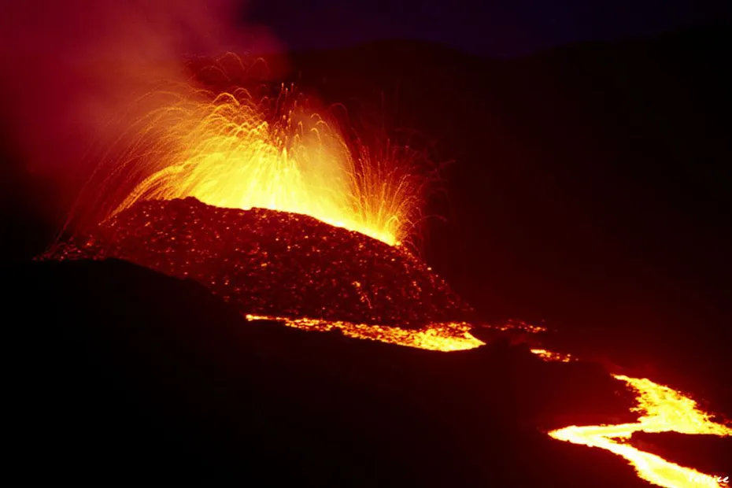

Plus de photos et moins de requins
Des photos du volcan ?
En veux-tu en voilà des photos du volcan en erruption : Grâce au site de « Colibri » et de Serge Gelabert sur Océanes (site web hors ligne) ou d'autres photos dans le journal de l'île… Depuis l'article du mois de mars, l'accès à la route du volcan a été rouverte et les photographes de toute l'île ont afflué et les photos sont arrivées sur de nombreux sites. Quel plaisir de regarder cette beauté d'une si grande force de la nature ! L'accès à cette route a été interdit au moment de l'erruption afin de s'assurer de la direction de la coulée de lave, de l'absence de fissure en dehors de l'enclos. Puis, le danger nétant pas avéré, la préfecture a décidé de rouvrir la route.
Les sites changeant et disparaissant, il ne reste plus aucun lien de la liste que je vous dressait en 1998. Il reste néamoins des photos sur le site de francetvinfo dont cette impressionante photo du piton Kapor.

Et des requins ?
Les cyclones et les requins sont d'autres dangers spécifiques de l'île. Pour les requins, il suffit de ne pas se baigner me direz vous. C'est effectivement une solution mais elle déplait aux surfeurs qui aiment se jetter à l'eau. Un système de prévention commercialisé par la société Sharkpod. Si le besoin se fait sentir… Sharkpod est un petit boitier que le plongeur ou le surfeur peut accrocher à sa taille et qui emmet des ondes sensées repousser les requins. Je me souviens que de pareils dispositifs éraient vendus pour éloigner les moustiques et qu'ils ne fonctionnaient guère. Pour les requins, je ne peux pas dire parce que je n'ai pas testé ce sharkpod.
La commercialisation des sharkpod a cessé en 2001. Il existe toujours des produits similaires généralements appelés «Shark shields» mais peu utilisés.